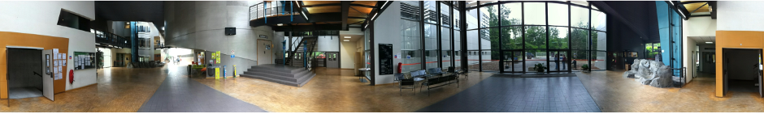

IUT de Fontainebleau
Bienvenue sur le site interne du département informatique.

rentrée 2025
Rentrée 2025
Permanents du département : matières et responsabilités
Réunion de rentrée 2025
Portraits d'anciens étudiants
FAQ JPO 2024
Important!
pour consulter l'emploi du temps en "temps réel", se connecter sur ade
BUT
Programme national du BUT informatique
Coefficients du BUT par semestre
Ressources pédagogiques
Mathématiques
server WIMS du département
Simplification formes propositionnelles
Projets et outils
Informatique
Travaux pratiques en BUT (APL, ASR, MATHS, WIM).
Machines Virtuelles
Machines Virtuelles
Seulement pour les étudiants en première année
Documents généraux
Plannings
Planning universitaire
Emploi du temps
ade
Abscences
Site d'appel
Fonctionnement des absences
Justification covid 2022
Justification d'absence
Demande de rattrapage
Règlement intérieur
Informatique
Signer la charte informatique du département informatique
Notes
Voir mes notes
Divers
Formulaire demande de covoiturage
Ressources informatiques
Services
Réinitialiser mon mot de passe
Rendre un devoir
GIT
MySQL et phpMyAdmin
pages web personnelles (https://dwarves.iut-fbleau.fr/~login)